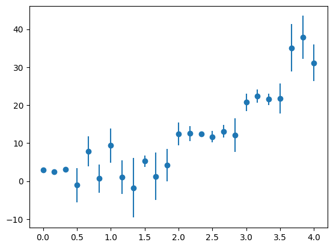
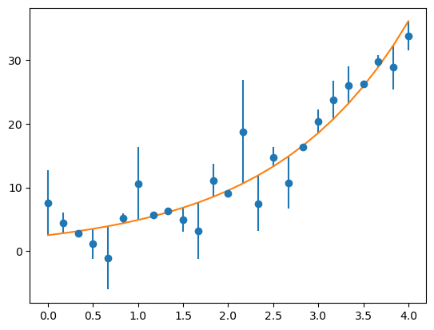
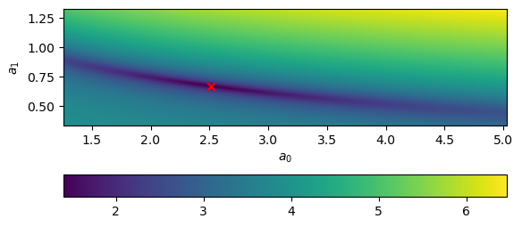

Nonlinear Fitting#
What about the case of fitting to a function where the fit parameters enter in a nonlinear fashion? For example:
One trick that is often used for something like this is to transform the data. So instead of fitting the data \((x_i, y_i)\), you instead fit \((x_i, \log y_i)\), and then our fitting function is:
which is linear.
However, when there are errors associated with the \(y_i\), the errors do not necessarily transform the correct way when you take the logarithm.
So let’s look at how we would fit directly to a nonlinear function.
We’ll minimize the same fitting function:
with fitting parameters \({\bf a} = (a_1, \ldots, a_M)^\intercal\).
Now we take the derivatives with respect to each parameter, \(a_k\):
Let’s define \(g_k \equiv {\partial \chi^2}/{\partial a_k}\), then we have
This is a nonlinear system of \(M\) equations and \(M\) unknowns. We can solve this using the same multivariate Newton’s method we looked at before:
Take an initial guess at the fit parameters, \({\bf a}^{(k)}\)
Solve the system \({\bf J}\delta {\bf a} = -{\bf g}\), where \(J_{ij} = \partial g_i/\partial a_j\) is the Jacobian
Correct the initial guess, \({\bf a}^{(k+1)} = {\bf a}^{(k)} + \delta {\bf a}\)
As we’ve seen with Newton’s method, convergence will be very sensitive to the initial guess.
Fitting an exponential#
Let’s try this out on data that is constructed to follow an exponential trend.
First let’s construct the data, and perturb it with some errors. We’ll take the form:
import numpy as np
import matplotlib.pyplot as plt
# make up some experimental data
a0 = 2.5
a1 = 2./3.
sigma = 4.0
N = 25
x = np.linspace(0.0, 4.0, N)
r = sigma * np.random.randn(N)
y = a0 * np.exp(a1 * x) + r
yerr = np.abs(r)
fig, ax = plt.subplots()
ax.errorbar(x, y, yerr=yerr, fmt="o")
<ErrorbarContainer object of 3 artists>

Now, let’s compute our vector \({\bf g}\) that we will zero:
We can divide out the \(-2\) in each expression. We’ll keep the overall \(a_0\) in the expression, to deal with the case where it might be \(0\).
Let’s write a function to compute this:
def g(x, y, yerr, a):
"""compute the nonlinear functions we minimize. Here a is the vector
of fit parameters"""
a0, a1 = a
g0 = np.sum(np.exp(a1 * x) * (y - a0 * np.exp(a1 * x)) / yerr**2)
g1 = a0 * np.sum(x * np.exp(a1 * x) * (y - a0 * np.exp(a1 * x)) / yerr**2)
return np.array([g0, g1])
We also need the Jacobian. We could either compute this numerically, via differencing, or analytically. We’ll do the latter.
Notice that the Jacobian is symmetric:
This is called the Hessian matrix.
Let’s write this function:
def jac(x, y, yerr, a):
""" compute the Jacobian of the function g"""
a0, a1 = a
dg0da0 = -np.sum(np.exp(2.0 * a1 * x) / yerr**2)
dg0da1 = np.sum(x * np.exp(a1 * x) * (y - 2.0 * a0 * np.exp(a1 * x)) / yerr**2)
dg1da0 = dg0da1
dg1da1 = np.sum(a0 * x**2 * np.exp(a1 * x) * (y - 2.0 * a0 * np.exp(a1 * x)) / yerr**2)
return np.array([[dg0da0, dg0da1],
[dg1da0, dg1da1]])
def fit(aguess, x, y, yerr, tol=1.e-5):
""" aguess is the initial guess to our fit parameters. x and y
are the vector of points that we are fitting to, and yerr are
the errors in y"""
avec = aguess.copy()
err = 1.e100
while err > tol:
# get the jacobian
J = jac(x, y, yerr, avec)
print("condition number of J: ", np.linalg.cond(J))
# get the current function values
gv = g(x, y, yerr, avec)
# solve for the correction: J da = -g
da = np.linalg.solve(J, -gv)
avec += da
err = np.max(np.abs(da))
return avec
# initial guesses
aguess = np.array([2.0, 1.0])
# fit
afit = fit(aguess, x, y, yerr)
condition number of J: 231.9252085601206
condition number of J: 950.8037234755665
condition number of J: 101.52394058176955
condition number of J: 6844.9277378275565
condition number of J: 6845.126414430329
condition number of J: 6845.346656997221
condition number of J: 6845.591484003482
condition number of J: 6845.864386572089
condition number of J: 6846.169404637444
condition number of J: 6846.511215021555
condition number of J: 6846.895233063445
condition number of J: 6847.327729611438
condition number of J: 6847.815965282179
condition number of J: 6848.368344011793
condition number of J: 6848.994587942509
condition number of J: 6849.705935649414
condition number of J: 6850.515365566699
condition number of J: 6851.437846167982
condition number of J: 6852.49061398372
condition number of J: 6853.693479874667
condition number of J: 6855.069163102544
condition number of J: 6856.643651708556
condition number of J: 6858.446586653825
condition number of J: 6860.511666345841
condition number of J: 6862.877068078909
condition number of J: 6865.585884333225
condition number of J: 6868.686576154291
condition number of J: 6872.2334548689105
condition number of J: 6876.28721995259
condition number of J: 6880.915608759191
condition number of J: 6886.194257819415
condition number of J: 6892.207941733295
condition number of J: 6899.052452382695
condition number of J: 6906.837521746633
condition number of J: 6915.69140618112
condition number of J: 6925.768121748857
condition number of J: 6937.259088950539
condition number of J: 6950.41279199086
condition number of J: 6965.5708574234295
condition number of J: 6983.241733689405
condition number of J: 7004.267113034745
condition number of J: 7030.225766628834
condition number of J: 7064.45446597861
condition number of J: 7114.688178086412
condition number of J: 7200.03733295896
condition number of J: 7370.258634971526
condition number of J: 7765.046690411056
condition number of J: 8848.555278907033
condition number of J: 13073.894486617835
condition number of J: 165903.81432596553
condition number of J: 7107778.885959685
condition number of J: 7108049.323820424
condition number of J: 7108351.239742211
condition number of J: 7108689.194990146
condition number of J: 7109068.470656619
condition number of J: 7109495.182163583
condition number of J: 7109976.41067649
condition number of J: 7110520.35377435
condition number of J: 7111136.497394377
condition number of J: 7111835.810944641
condition number of J: 7112630.968104839
condition number of J: 7113536.594580824
condition number of J: 7114569.54455939
condition number of J: 7115749.206533179
condition number of J: 7117097.838428195
condition number of J: 7118640.931392906
condition number of J: 7120407.600062852
condition number of J: 7122430.996525838
condition number of J: 7124748.745320552
condition number of J: 7127403.397361784
condition number of J: 7130442.904990038
condition number of J: 7133921.128854183
condition number of J: 7137898.403080718
condition number of J: 7142442.213342548
condition number of J: 7147628.087858143
condition number of J: 7153540.8727410035
condition number of J: 7160276.671118023
condition number of J: 7167945.8881507395
condition number of J: 7176678.072187302
condition number of J: 7186629.649366053
condition number of J: 7197996.395476192
condition number of J: 7211034.065236443
condition number of J: 7226094.298518488
condition number of J: 7243692.168594725
condition number of J: 7264645.430171836
condition number of J: 7290386.685716295
condition number of J: 7323708.005418877
condition number of J: 7370611.033823341
condition number of J: 7445047.534654979
condition number of J: 7581555.733688224
condition number of J: 7871738.128733387
condition number of J: 8590142.324433932
condition number of J: 10839598.930882266
condition number of J: 26756535.68049496
condition number of J: 21867370.208939344
condition number of J: 926572622.3801693
condition number of J: 927477336.7522911
condition number of J: 928507327.8356148
condition number of J: 929680203.5648082
condition number of J: 931017412.8662235
condition number of J: 932546087.2069408
condition number of J: 934302121.5876957
condition number of J: 936335645.9164429
condition number of J: 938721592.3250711
condition number of J: 941582070.6430178
condition number of J: 945137616.0812297
condition number of J: 949831223.9497427
condition number of J: 956639603.127577
condition number of J: 967878558.426583
condition number of J: 989386296.7480079
condition number of J: 1037063145.1167538
condition number of J: 1161362492.1645122
condition number of J: 1598932102.2391024
condition number of J: 10835895746.251831
condition number of J: 1186081759.2630997
condition number of J: 1601638901.3634002
condition number of J: 15496960382.679209
condition number of J: 2271509.26331047
condition number of J: 10.81971697543856
condition number of J: 170.40319917127445
condition number of J: 479.5077866817056
condition number of J: 1324.0082275576524
condition number of J: 3621.7040527637855
condition number of J: 9868.378950535052
condition number of J: 26848.94783809072
condition number of J: 73007.0496535964
condition number of J: 198477.8272393553
condition number of J: 539542.77973003
condition number of J: 1466653.4489562232
condition number of J: 3986801.536493554
condition number of J: 10837274.288758542
condition number of J: 29458789.887920387
condition number of J: 80077317.35960871
condition number of J: 217672740.7692985
condition number of J: 591695879.9030029
condition number of J: 1608396182.433365
condition number of J: 4372074139.790473
condition number of J: 11884529710.987078
condition number of J: 32305501177.27673
condition number of J: 87815456833.5726
condition number of J: 238707160592.64865
condition number of J: 648873336986.1694
condition number of J: 1763820600925.2083
condition number of J: 4794561488180.822
condition number of J: 13032969368775.588
condition number of J: 35427283806030.26
condition number of J: 96301341801617.2
condition number of J: 261774187475584.2
condition number of J: 711576016974536.0
condition number of J: 1934264156509167.0
condition number of J: 5257875108078548.0
condition number of J: 1.4292386362597042e+16
condition number of J: 3.8850734134763496e+16
condition number of J: 1.0560724462082125e+17
condition number of J: 2.870702540064078e+17
condition number of J: 7.803378549567406e+17
condition number of J: 2.1211782111876188e+18
condition number of J: 5.765960186394566e+18
condition number of J: 1.567350479829468e+19
condition number of J: 4.260500328147009e+19
condition number of J: 1.1581240622145815e+20
condition number of J: 3.1481075934190685e+20
condition number of J: 8.557443665224991e+20
condition number of J: 2.326154361324306e+21
condition number of J: 6.323143130578617e+21
condition number of J: 1.71880850705975e+22
condition number of J: 4.6722059313413385e+22
condition number of J: 1.2700372481983727e+23
condition number of J: 3.452319173243767e+23
condition number of J: 9.384376474669288e+23
condition number of J: 2.5509380042512074e+24
condition number of J: 6.934168422481641e+24
condition number of J: 1.884902401830637e+25
condition number of J: 5.1236959473150295e+25
condition number of J: 1.3927649588135698e+26
condition number of J: 3.785927678857438e+26
condition number of J: 1.0291218413298303e+27
condition number of J: 2.7974432005571907e+27
condition number of J: 7.604239018220925e+27
condition number of J: 2.067046474248919e+28
condition number of J: 5.618814869531175e+28
condition number of J: 1.5273522357322073e+29
condition number of J: 4.151773828047155e+29
condition number of J: 1.128569135265243e+30
condition number of J: 3.067768972551249e+30
condition number of J: 8.339060651996532e+30
condition number of J: 2.2667917036740015e+31
condition number of J: 6.161778696998759e+31
condition number of J: 1.6749451063037777e+32
condition number of J: 4.5529728461319635e+32
condition number of J: 1.2376263353107979e+33
condition number of J: 3.3642171776977024e+33
condition number of J: 9.144890421125441e+33
condition number of J: 2.4858389454994466e+34
condition number of J: 6.757210834026942e+34
condition number of J: 1.8368003421202024e+35
condition number of J: 4.9929409924927044e+35
condition number of J: 1.3572220770461184e+36
condition number of J: 3.6893121092179065e+36
condition number of J: 1.0028590066000949e+37
condition number of J: 2.726053414147527e+37
condition number of J: 7.410181459085963e+37
condition number of J: 2.0142961605817504e+38
condition number of J: 5.4754246504441945e+38
condition number of J: 1.4883747330399178e+39
condition number of J: 4.0458219907599913e+39
condition number of J: 1.0997684398662881e+40
condition number of J: 2.989480565601286e+40
condition number of J: 8.126250698005443e+40
condition number of J: 2.208943960589083e+41
condition number of J: 6.004532228153659e+41
condition number of J: 1.6322010844186788e+42
condition number of J: 4.4367825481664437e+42
condition number of J: 1.206042537750506e+43
condition number of J: 3.278363514715833e+43
condition number of J: 8.911515969135174e+43
condition number of J: 2.422401192292275e+44
condition number of J: 6.584769142245616e+44
condition number of J: 1.789925830396411e+45
condition number of J: 4.865522859056032e+45
condition number of J: 1.322586237372411e+46
condition number of J: 3.595162135619447e+46
condition number of J: 9.772663903618356e+46
condition number of J: 2.6564854704843415e+47
condition number of J: 7.221076181983061e+47
condition number of J: 1.962892016740298e+48
condition number of J: 5.33569370033248e+48
condition number of J: 1.4503919227837182e+49
condition number of J: 3.942574007846756e+49
condition number of J: 1.0717027282884785e+50
condition number of J: 2.913190051816553e+50
condition number of J: 7.9188715807006e+50
condition number of J: 2.1525724719719195e+51
condition number of J: 5.851298635002436e+51
condition number of J: 1.590547875241434e+52
condition number of J: 4.323557386562934e+52
condition number of J: 1.1752647478193904e+53
condition number of J: 3.194700807625951e+53
condition number of J: 8.68409715273306e+53
condition number of J: 2.3605823486847213e+54
condition number of J: 6.41672810301085e+54
condition number of J: 1.7442475400576874e+55
condition number of J: 4.7413563924732024e+55
condition number of J: 1.2888342923908038e+56
condition number of J: 3.503414836900794e+56
condition number of J: 9.523268888701239e+56
condition number of J: 2.5886928767685944e+57
condition number of J: 7.036796806381442e+57
condition number of J: 1.9127996889345313e+58
condition number of J: 5.19952863591285e+58
condition number of J: 1.413378420755435e+59
condition number of J: 3.8419608778756415e+59
condition number of J: 1.0443532439979917e+60
condition number of J: 2.838846445651996e+60
condition number of J: 7.716784707001369e+60
condition number of J: 2.097639564317248e+61
condition number of J: 5.701975510340325e+61
condition number of J: 1.5499576416076594e+62
condition number of J: 4.2132216920633385e+62
condition number of J: 1.1452723964805243e+63
condition number of J: 3.1131731439887525e+63
condition number of J: 8.462481986151339e+63
condition number of J: 2.3003411006617197e+64
condition number of J: 6.252975413186233e+64
condition number of J: 1.6997349439465326e+65
condition number of J: 4.620358611326713e+65
condition number of J: 1.2559436854133673e+66
condition number of J: 3.41400889762704e+66
condition number of J: 9.280238348617079e+66
condition number of J: 2.5226303266814583e+67
condition number of J: 6.857220176937913e+67
condition number of J: 1.8639857000713052e+68
condition number of J: 5.0668384570113405e+68
condition number of J: 1.3773094905431392e+69
condition number of J: 3.743915360307601e+69
condition number of J: 1.017701709121285e+70
condition number of J: 2.766400062696101e+70
condition number of J: 7.519855020674779e+70
condition number of J: 2.0441085255346768e+71
condition number of J: 5.556463060359124e+71
condition number of J: 1.5104032567478144e+72
condition number of J: 4.105701726462945e+72
condition number of J: 1.116045439611715e+73
condition number of J: 3.033726038231112e+73
condition number of J: 8.246522362246682e+73
condition number of J: 2.241637188527632e+74
condition number of J: 6.093401635572686e+74
condition number of J: 1.6563582939479854e+75
condition number of J: 4.502448651856235e+75
condition number of J: 1.2238924353910729e+76
condition number of J: 3.3268845671120394e+76
condition number of J: 9.043409864161494e+76
condition number of J: 2.4582536701057467e+77
condition number of J: 6.682226281191209e+77
condition number of J: 1.8164174273813526e+78
condition number of J: 4.937534485747058e+78
condition number of J: 1.3421610269996106e+79
condition number of J: 3.648371930558971e+79
condition number of J: 9.917303122298495e+79
condition number of J: 2.6958024864664154e+80
condition number of J: 7.327950912076368e+80
condition number of J: 1.9919435804137085e+81
condition number of J: 5.4146640379542316e+81
condition number of J: 1.4718582861581666e+82
condition number of J: 4.000925633330617e+82
condition number of J: 1.0875643446098615e+83
condition number of J: 2.956306395232957e+83
condition number of J: 8.036073953519012e+83
condition number of J: 2.184431380000377e+84
condition number of J: 5.93790012577074e+84
condition number of J: 1.6140886011087282e+85
condition number of J: 4.387547713916736e+85
condition number of J: 1.1926591222236888e+86
condition number of J: 3.241983619486569e+86
condition number of J: 8.812625161012226e+86
condition number of J: 2.3955198836200496e+87
condition number of J: 6.511698169356708e+87
condition number of J: 1.770063080617237e+88
condition number of J: 4.811530307268074e+88
condition number of J: 1.307909540132677e+89
condition number of J: 3.5552667362108827e+89
condition number of J: 9.664216964366939e+89
condition number of J: 2.627006536052429e+90
condition number of J: 7.140944130194459e+90
condition number of J: 1.941109866714888e+91
condition number of J: 5.27648367773364e+91
condition number of J: 1.4342969699344104e+92
condition number of J: 3.898823389986578e+92
condition number of J: 1.0598100773371606e+93
condition number of J: 2.880862474843379e+93
condition number of J: 7.830996115656312e+93
condition number of J: 2.1286854439921922e+94
condition number of J: 5.7863669609092506e+94
condition number of J: 1.5728976162635403e+95
condition number of J: 4.275579008315731e+95
condition number of J: 1.1622228724445594e+96
condition number of J: 3.159249314785521e+96
condition number of J: 8.587730003953172e+96
condition number of J: 2.3343870417458434e+97
condition number of J: 6.345521876167993e+97
condition number of J: 1.72489168080768e+98
condition number of J: 4.688741711999696e+98
condition number of J: 1.2745321394066726e+99
condition number of J: 3.46453755433619e+99
condition number of J: 9.417589477966005e+99
condition number of J: 2.55996623458421e+100
condition number of J: 6.9587096969389835e+100
condition number of J: 1.891573411871099e+101
condition number of J: 5.141829632685485e+101
condition number of J: 1.39769420555612e+102
condition number of J: 3.799326760705703e+102
condition number of J: 1.0327640894004478e+103
condition number of J: 2.8073438573022907e+103
condition number of J: 7.63115179354094e+103
condition number of J: 2.0743621250594987e+104
condition number of J: 5.638700870192924e+104
condition number of J: 1.5327578111561632e+105
condition number of J: 4.16646770549446e+105
condition number of J: 1.132563345270704e+106
condition number of J: 3.078626361028143e+106
condition number of J: 8.368574093797797e+106
condition number of J: 2.2748142889283673e+107
condition number of J: 6.183586344712966e+107
condition number of J: 1.6808730395540742e+108
condition number of J: 4.5690866393665615e+108
condition number of J: 1.2420065184445131e+109
condition number of J: 3.3761237499154043e+109
condition number of J: 9.177255840024055e+109
condition number of J: 2.4946367785057037e+110
condition number of J: 6.781125823617666e+110
condition number of J: 1.843301110283428e+111
condition number of J: 5.010611912461824e+111
condition number of J: 1.3620255311105402e+112
condition number of J: 3.702369251115061e+112
condition number of J: 1.0064083057551595e+113
condition number of J: 2.7357014095445047e+113
condition number of J: 7.436407429654625e+113
condition number of J: 2.0214251185047998e+114
condition number of J: 5.494803167222269e+114
condition number of J: 1.4936423600419503e+115
condition number of J: 4.060140885518717e+115
condition number of J: 1.1036607190089146e+116
condition number of J: 3.0000608772659767e+116
condition number of J: 8.155010966943005e+116
condition number of J: 2.21676181223254e+117
condition number of J: 6.025783352213657e+117
condition number of J: 1.637977738855341e+118
condition number of J: 4.452485122950909e+118
condition number of J: 1.2103109401201694e+119
condition number of J: 3.28996623531384e+119
condition number of J: 8.943055433697428e+119
condition number of J: 2.4309745076321642e+120
condition number of J: 6.608073829543685e+120
condition number of J: 1.7962607011964372e+121
condition number of J: 4.882742823237379e+121
condition number of J: 1.3272671089444983e+122
condition number of J: 3.607886063755202e+122
condition number of J: 9.807251126256398e+122
condition number of J: 2.6658872523637273e+123
condition number of J: 7.246632874820932e+123
condition number of J: 1.9698390461139672e+124
condition number of J: 5.354577684040697e+124
condition number of J: 1.4555251217600143e+125
condition number of J: 3.956527489345886e+125
condition number of J: 1.075495677808761e+126
condition number of J: 2.9235003575737996e+126
condition number of J: 7.946897897486379e+126
condition number of J: 2.1601908147356616e+127
condition number of J: 5.87200743770009e+127
condition number of J: 1.5961771114476512e+128
condition number of J: 4.338859237050399e+128
condition number of J: 1.1794242220315775e+129
condition number of J: 3.206007430792884e+129
condition number of J: 8.714831741028965e+129
condition number of J: 2.368936875971714e+130
condition number of J: 6.439438062720449e+130
condition number of J: 1.7504207471380514e+131
condition number of J: 4.758136909103071e+131
condition number of J: 1.2933957097335166e+132
condition number of J: 3.5158140547755076e+132
condition number of J: 9.556973457337175e+132
condition number of J: 2.597854728414506e+133
condition number of J: 7.061701301225562e+133
condition number of J: 1.9195694325127037e+134
condition number of J: 5.217930706864724e+134
condition number of J: 1.4183806222628843e+135
condition number of J: 3.8555582713356313e+135
condition number of J: 1.0480493987536613e+136
condition number of J: 2.8488936359595065e+136
condition number of J: 7.744095801841343e+136
condition number of J: 2.1050634895991305e+137
condition number of J: 5.722155831529902e+137
condition number of J: 1.555443221645869e+138
condition number of J: 4.2281330445997616e+138
condition number of J: 1.1493257223442747e+139
condition number of J: 3.124191226029008e+139
condition number of J: 8.492432238345838e+139
condition number of J: 2.308482423291527e+140
condition number of J: 6.275105822550459e+140
condition number of J: 1.7057506129096463e+141
condition number of J: 4.6367108949551696e+141
condition number of J: 1.2603886969574718e+142
condition number of J: 3.42609169173467e+142
condition number of J: 9.313082788276862e+142
condition number of J: 2.5315583710307687e+143
condition number of J: 6.88148911765632e+143
condition number of J: 1.870582682126385e+144
condition number of J: 5.0847709134543344e+144
condition number of J: 1.3821840375920017e+145
condition number of J: 3.7571657529724914e+145
condition number of J: 1.0213035392813769e+146
condition number of J: 2.776190852169476e+146
condition number of J: 7.546469145786519e+146
condition number of J: 2.0513429948018345e+147
condition number of J: 5.576128386706585e+147
condition number of J: 1.515748846673916e+148
condition number of J: 4.120232546421462e+148
condition number of J: 1.1199953259962999e+149
condition number of J: 3.044462942614806e+149
condition number of J: 8.275708294326782e+149
condition number of J: 2.2495707474096287e+150
condition number of J: 6.1149672845166275e+150
condition number of J: 1.6622204451123095e+151
condition number of J: 4.518383630841898e+151
condition number of J: 1.2282240117724335e+152
condition number of J: 3.3386590124780745e+152
condition number of J: 9.07541612504017e+152
condition number of J: 2.4669538738400893e+153
condition number of J: 6.705875886906164e+153
condition number of J: 1.822846056727871e+154
condition number of J: 4.955009312081596e+154
condition number of J: 1.346911177287676e+155
condition number of J: 3.661284177769469e+155
condition number of J: 9.952402249255366e+155
condition number of J: 2.705343418366579e+156
condition number of J: 7.353885853887146e+156
condition number of J: 1.9989934285183463e+157
condition number of J: 5.4338275119504655e+157
condition number of J: 1.4770674584715777e+158
condition number of J: 4.0150856317714753e+158
condition number of J: 1.0914134312551408e+159
condition number of J: 2.966769297516984e+159
condition number of J: 8.064515070670624e+159
condition number of J: 2.1921624771938074e+160
condition number of J: 5.958915426785692e+160
condition number of J: 1.6198011521955825e+161
condition number of J: 4.403076037730276e+161
condition number of J: 1.1968801582685662e+162
condition number of J: 3.253457585064629e+162
condition number of J: 8.843814633143432e+162
condition number of J: 2.4039980611533982e+163
condition number of J: 6.53474424528406e+163
condition number of J: 1.7763276535582978e+164
condition number of J: 4.828559182056815e+164
condition number of J: 1.3125384682224108e+165
condition number of J: 3.56784946732245e+165
condition number of J: 9.6984203736999e+165
condition number of J: 2.636303986658542e+166
condition number of J: 7.166217221228052e+166
condition number of J: 1.947979805125449e+167
condition number of J: 5.2951581064777e+167
condition number of J: 1.4393732059655938e+168
condition number of J: 3.912622030147111e+168
condition number of J: 1.0635609366177435e+169
condition number of J: 2.8910583674668943e+169
condition number of J: 7.858711425299732e+169
condition number of J: 2.1362192462495745e+170
condition number of J: 5.806845958684696e+170
condition number of J: 1.5784643850153453e+171
condition number of J: 4.290711054656996e+171
condition number of J: 1.1663361891042454e+172
condition number of J: 3.170430468716243e+172
condition number of J: 8.618123531504256e+172
condition number of J: 2.3426488591103317e+173
condition number of J: 6.367979824179929e+173
condition number of J: 1.7309963840062125e+174
condition number of J: 4.705336015772404e+174
condition number of J: 1.2790429388468009e+175
condition number of J: 3.476799178486113e+175
condition number of J: 9.450920028080135e+175
condition number of J: 2.569026417454988e+176
condition number of J: 6.983337827399135e+176
condition number of J: 1.8982680318209743e+177
condition number of J: 5.16002749644367e+177
condition number of J: 1.4026408977931849e+178
condition number of J: 3.812773264324696e+178
condition number of J: 1.0364192280448299e+179
condition number of J: 2.8172795542598113e+179
condition number of J: 7.658159818033644e+179
condition number of J: 2.0817036672796084e+180
condition number of J: 5.658657251002714e+180
condition number of J: 1.5381825178878693e+181
condition number of J: 4.181213587227975e+181
condition number of J: 1.1365716915067865e+182
condition number of J: 3.0895221757638576e+182
condition number of J: 8.398191989000147e+182
condition number of J: 2.2828652675609423e+183
condition number of J: 6.205471173631204e+183
condition number of J: 1.6868219528308131e+184
condition number of J: 4.5852574622258e+184
condition number of J: 1.2464022038374627e+185
condition number of J: 3.388072461642682e+185
condition number of J: 9.20973580598581e+185
condition number of J: 2.5034657486319843e+186
condition number of J: 6.805125452675942e+186
condition number of J: 1.849824885839315e+187
condition number of J: 5.028345373008337e+187
condition number of J: 1.3668459854664684e+188
condition number of J: 3.715472604595697e+188
condition number of J: 1.0099701665209883e+189
condition number of J: 2.7453835509397587e+189
condition number of J: 7.462726218669912e+189
condition number of J: 2.028579307097531e+190
condition number of J: 5.514250268071259e+190
condition number of J: 1.4989286301273522e+191
condition number of J: 4.074510457432191e+191
condition number of J: 1.1075667736304276e+192
condition number of J: 3.010678634564605e+192
condition number of J: 8.183873023666854e+192
condition number of J: 2.224607332664979e+193
condition number of J: 6.04710968783996e+193
condition number of J: 1.643774837915401e+194
condition number of J: 4.468243271983647e+194
condition number of J: 1.2145944491367535e+195
condition number of J: 3.3016100200356607e+195
condition number of J: 8.974706522121242e+195
condition number of J: 2.439578165483505e+196
condition number of J: 6.631460996339265e+196
condition number of J: 1.8026179922483937e+197
condition number of J: 4.900023731982137e+197
condition number of J: 1.331964546966512e+198
condition number of J: 3.6206550241707544e+198
condition number of J: 9.841960759322304e+198
condition number of J: 2.6753223088472813e+199
condition number of J: 7.272280017410662e+199
condition number of J: 1.9768106622793228e+200
condition number of J: 5.3735285015779735e+200
condition number of J: 1.460676488054617e+201
condition number of J: 3.970530354736241e+201
condition number of J: 1.0793020512624573e+202
condition number of J: 2.9338471533653104e+202
condition number of J: 7.975023404469218e+202
condition number of J: 2.1678361201904272e+203
condition number of J: 5.892789532590795e+203
condition number of J: 1.6018262705375232e+204
condition number of J: 4.3542152435504717e+204
condition number of J: 1.1835984173742623e+205
condition number of J: 3.2173540701413423e+205
condition number of J: 8.74567510458396e+205
condition number of J: 2.3773209714397233e+206
condition number of J: 6.462228397079205e+206
condition number of J: 1.7566158023132426e+207
condition number of J: 4.774976815012093e+207
condition number of J: 1.297973270756062e+208
condition number of J: 3.528257155721756e+208
condition number of J: 9.590797312529047e+208
condition number of J: 2.6070490055081557e+209
condition number of J: 7.086693937575044e+209
condition number of J: 1.926363135436112e+210
condition number of J: 5.236397906069374e+210
condition number of J: 1.4234005274649375e+211
condition number of J: 3.8692037884269595e+211
condition number of J: 1.05175863486859e+212
condition number of J: 2.8589763850881797e+212
condition number of J: 7.77150355557873e+212
condition number of J: 2.112513689493452e+213
condition number of J: 5.742407574521025e+213
condition number of J: 1.5609482161426084e+214
condition number of J: 4.243097171106014e+214
condition number of J: 1.1533933936603459e+215
condition number of J: 3.135248303051629e+215
condition number of J: 8.522488489892299e+215
condition number of J: 2.3166525595325608e+216
condition number of J: 6.297314555430496e+216
condition number of J: 1.711787572411737e+217
condition number of J: 4.653121052268846e+217
condition number of J: 1.2648494402002636e+218
condition number of J: 3.438217249032972e+218
condition number of J: 9.346043470340776e+218
condition number of J: 2.5405180133415643e+219
condition number of J: 6.90584395053925e+219
condition number of J: 1.8772030120924667e+220
condition number of J: 5.102766836099539e+220
condition number of J: 1.3870758365432825e+221
condition number of J: 3.770463041170235e+221
condition number of J: 1.0249181169689479e+222
condition number of J: 2.7860162930149948e+222
condition number of J: 7.57317746309349e+222
condition number of J: 2.058603068162261e+223
condition number of J: 5.595863312195511e+223
condition number of J: 1.52111335560817e+224
condition number of J: 4.134814793576051e+224
condition number of J: 1.1239591917421415e+225
condition number of J: 3.05523784684218e+225
condition number of J: 8.304997520691437e+225
condition number of J: 2.2575323845892953e+226
condition number of J: 6.136609258186899e+226
condition number of J: 1.668103343488299e+227
condition number of J: 4.53437500659602e+227
condition number of J: 1.2325709183848825e+228
condition number of J: 3.350475129732702e+228
condition number of J: 9.107535661856369e+228
condition number of J: 2.4756848691666885e+229
condition number of J: 6.729609192846817e+229
condition number of J: 1.8292974381546447e+230
condition number of J: 4.972545984982456e+230
condition number of J: 1.3516781392154794e+231
condition number of J: 3.674242123754773e+231
condition number of J: 9.98762559836137e+231
condition number of J: 2.7149181173478105e+232
condition number of J: 7.379912584140798e+232
condition number of J: 2.006068227308617e+233
condition number of J: 5.453058808942062e+233
condition number of J: 1.482295066986573e+234
condition number of J: 4.029295745004085e+234
condition number of J: 1.0952761405131953e+235
condition number of J: 2.977269229901775e+235
condition number of J: 8.093056846072251e+235
condition number of J: 2.199920936136427e+236
condition number of J: 5.980005104746261e+236
condition number of J: 1.6255339210324089e+237
condition number of J: 4.418659319086178e+237
condition number of J: 1.2011161333223176e+238
condition number of J: 3.2649721590790476e+238
condition number of J: 8.875114490449272e+238
condition number of J: 2.4125062444881815e+239
condition number of J: 6.557871885436198e+239
condition number of J: 1.7826143979543673e+240
condition number of J: 4.8456483251088174e+240
condition number of J: 1.3171837789246304e+241
condition number of J: 3.5804767309918396e+241
condition number of J: 9.732744835075565e+241
condition number of J: 2.645634342621453e+242
condition number of J: 7.191579758295087e+242
condition number of J: 1.954874057488743e+243
condition number of J: 5.313898627397653e+243
condition number of J: 1.4444674077128504e+244
condition number of J: 3.926469506187185e+244
condition number of J: 1.0673250708667182e+245
condition number of J: 2.901290345195763e+245
condition number of J: 7.886524824429312e+245
condition number of J: 2.1437797119937365e+246
condition number of J: 5.82739743533174e+246
condition number of J: 1.584050855567111e+247
condition number of J: 4.305896656043082e+247
condition number of J: 1.1704640635344476e+248
condition number of J: 3.1816511947700224e+248
condition number of J: 8.648624627238364e+248
condition number of J: 2.3509399165385427e+249
condition number of J: 6.390517254925745e+249
condition number of J: 1.7371226928518633e+250
condition number of J: 4.721989049783063e+250
condition number of J: 1.2835697028207896e+251
condition number of J: 3.4891041987383284e+251
condition number of J: 9.484368541030555e+251
condition number of J: 2.5781186659491987e+252
condition number of J: 7.008053121260782e+252
condition number of J: 1.904986345239888e+253
condition number of J: 5.178289765728197e+253
condition number of J: 1.4076050972674401e+254
condition number of J: 3.82626735754841e+254
condition number of J: 1.040087302884985e+255
condition number of J: 2.827250415443234e+255
condition number of J: 7.685263428802629e+255
condition number of J: 2.0890711925435042e+256
condition number of J: 5.6786842610482754e+256
condition number of J: 1.5436264236363906e+257
condition number of J: 4.1960116573000245e+257
condition number of J: 1.1405942240040977e+258
condition number of J: 3.100456552755686e+258
condition number of J: 8.427914707282554e+258
condition number of J: 2.2909447400608898e+259
condition number of J: 6.227433456911348e+259
condition number of J: 1.692791920386001e+260
condition number of J: 4.6014855165475575e+260
condition number of J: 1.250813446354871e+261
condition number of J: 3.4000634620186778e+261
condition number of J: 9.242330724412923e+261
condition number of J: 2.5123259660780377e+262
condition number of J: 6.829210020755744e+262
condition number of J: 1.856371750215076e+263
condition number of J: 5.046141595474355e+263
condition number of J: 1.3716835002809274e+264
condition number of J: 3.728622333210743e+264
condition number of J: 1.013544633355333e+265
condition number of J: 2.7550999591819868e+265
condition number of J: 7.489138154632653e+265
condition number of J: 2.0357588156557243e+266
condition number of J: 5.533766195722263e+266
condition number of J: 1.504233609277277e+267
condition number of J: 4.0889308858557857e+267
condition number of J: 1.111486652484673e+268
condition number of J: 3.02133397002386e+268
condition number of J: 8.212837228421883e+268
condition number of J: 2.2324806198111154e+269
condition number of J: 6.068511501219542e+269
condition number of J: 1.64959245395598e+270
condition number of J: 4.484057191951705e+270
condition number of J: 1.218893118265341e+271
condition number of J: 3.313295014214459e+271
condition number of J: 9.006469629463119e+271
condition number of J: 2.4482122732337863e+272
condition number of J: 6.654930934541813e+272
condition number of J: 1.808997782901498e+273
condition number of J: 4.917365800983843e+273
condition number of J: 1.336678610070034e+274
condition number of J: 3.633469176243267e+274
condition number of J: 9.876793236048127e+274
condition number of J: 2.684790757699684e+275
condition number of J: 7.298017929869842e+275
condition number of J: 1.9838069522533488e+276
condition number of J: 5.392546389480999e+276
condition number of J: 1.4658460859648633e+277
condition number of J: 3.984582778796104e+277
condition number of J: 1.0831218961592296e+278
condition number of J: 2.944230568335739e+278
condition number of J: 8.003248452700687e+278
condition number of J: 2.1755084837619244e+279
condition number of J: 5.913645179068528e+279
condition number of J: 1.6074954230216419e+280
condition number of J: 4.369625597730815e+280
condition number of J: 1.187787385948117e+281
condition number of J: 3.228740867295637e+281
condition number of J: 8.776627628372827e+281
condition number of J: 2.3857347397357463e+282
condition number of J: 6.485099390547148e+282
condition number of J: 1.7628327829075145e+283
condition number of J: 4.791876320389385e+283
condition number of J: 1.3025670325937659e+284
condition number of J: 3.540744295049455e+284
condition number of J: 9.624740876452965e+284
condition number of J: 2.616275822808908e+285
condition number of J: 7.111775027378191e+285
condition number of J: 1.9331808825010965e+286
condition number of J: 5.254930464027152e+286
condition number of J: 1.4284381990180865e+287
condition number of J: 3.8828975994676296e+287
condition number of J: 1.0554809986400107e+288
condition number of J: 2.869094818886947e+288
condition number of J: 7.799008310306383e+288
condition number of J: 2.1199902569906925e+289
condition number of J: 5.76273099208802e+289
condition number of J: 1.566472693809063e+290
condition number of J: 4.2581142583584666e+290
condition number of J: 1.1574754611998186e+291
condition number of J: 3.146344513066719e+291
condition number of J: 8.552651115941087e+291
condition number of J: 2.3248516113612625e+292
condition number of J: 6.319601889027051e+292
condition number of J: 1.717845897803769e+293
condition number of J: 4.6695892880928986e+293
condition number of J: 1.2693259708189937e+294
condition number of J: 3.4503857208684064e+294
condition number of J: 9.379120806211155e+294
condition number of J: 2.5495093654445924e+295
condition number of J: 6.930284979574188e+295
condition number of J: 1.8838467726019184e+296
condition number of J: 5.120826449565014e+296
condition number of J: 1.3919849484545023e+297
condition number of J: 3.783807390872375e+297
condition number of J: 1.028545487299741e+298
condition number of J: 2.7958765078704394e+298
condition number of J: 7.599980305959748e+298
condition number of J: 2.0658888362337e+299
condition number of J: 5.61566808315047e+299
condition number of J: 1.526496850508536e+300
condition number of J: 4.1494486499373176e+300
condition number of J: 1.1279370863248529e+301
condition number of J: 3.0660508854018894e+301
condition number of J: 8.334390406918722e+301
condition number of J: 2.265522199441055e+302
condition number of J: 6.158327826711188e+302
condition number of J: 1.6740070625042706e+303
condition number of J: 4.550422978717463e+303
condition number of J: 1.2369332094850163e+304
condition number of J: 3.362333066360646e+304
condition number of J: 9.139768875515124e+304
condition number of J: 2.4844467650628323e+305
condition number of J: 6.753426495244155e+305
condition number of J: 1.8357716521856043e+306
condition number of J: 4.990144723336368e+306
condition number of J: 1.3564619722826042e+307
condition number of J: 3.68724593025152e+307
condition number of J: 1.002297360926227e+308
condition number of J: inf
condition number of J: inf
condition number of J: inf
condition number of J: inf
condition number of J: inf
condition number of J: inf
condition number of J: inf
condition number of J: inf
condition number of J: inf
condition number of J: inf
condition number of J: inf
condition number of J: inf
condition number of J: inf
condition number of J: inf
condition number of J: inf
condition number of J: inf
condition number of J: inf
condition number of J: inf
condition number of J: inf
condition number of J: inf
condition number of J: inf
condition number of J: inf
condition number of J: inf
condition number of J: inf
condition number of J: inf
condition number of J: inf
condition number of J: inf
condition number of J: inf
condition number of J: inf
condition number of J: inf
condition number of J: inf
condition number of J: inf
condition number of J: inf
condition number of J: inf
---------------------------------------------------------------------------
LinAlgError Traceback (most recent call last)
Cell In[6], line 5
2 aguess = np.array([2.0, 1.0])
4 # fit
----> 5 afit = fit(aguess, x, y, yerr)
Cell In[5], line 20, in fit(aguess, x, y, yerr, tol)
17 gv = g(x, y, yerr, avec)
19 # solve for the correction: J da = -g
---> 20 da = np.linalg.solve(J, -gv)
22 avec += da
23 err = np.max(np.abs(da))
File /opt/hostedtoolcache/Python/3.10.14/x64/lib/python3.10/site-packages/numpy/linalg/linalg.py:409, in solve(a, b)
407 signature = 'DD->D' if isComplexType(t) else 'dd->d'
408 extobj = get_linalg_error_extobj(_raise_linalgerror_singular)
--> 409 r = gufunc(a, b, signature=signature, extobj=extobj)
411 return wrap(r.astype(result_t, copy=False))
File /opt/hostedtoolcache/Python/3.10.14/x64/lib/python3.10/site-packages/numpy/linalg/linalg.py:112, in _raise_linalgerror_singular(err, flag)
111 def _raise_linalgerror_singular(err, flag):
--> 112 raise LinAlgError("Singular matrix")
LinAlgError: Singular matrix
afit
array([2.51306818, 0.66591209])
ax.plot(x, afit[0] * np.exp(afit[1] *x))
fig

Is it a minimum?#
We just found an extrema. Let’s plot the surface around our fit parameters to see if it looks like a minimum
npts = 100
a0v = np.linspace(0.5 * afit[0], 2.0 * afit[0], npts)
a1v = np.linspace(0.5 * afit[1], 2.0 * afit[1], npts)
def chisq(a0, a1, x, y, yerr):
return np.sum((y - a0 * np.exp(a1 * x))**2 / yerr**2)
c2 = np.zeros((npts, npts), dtype=np.float64)
for i, a0 in enumerate(a0v):
for j, a1 in enumerate(a1v):
c2[i, j] = chisq(a0, a1, x, y, yerr)
c2.max()
2885495.8835515887
Now we’ll plot the (log of) the \(\chi^2\)
fig, ax = plt.subplots()
# we need to transpose to put a0 on the horizontal
# we use origin = lower to have the origin at the lower left
im = ax.imshow(np.log10(c2).T,
origin="lower",
extent=[a0v[0], a0v[-1], a1v[0], a1v[-1]])
fig.colorbar(im, ax=ax, orientation="horizontal")
ax.scatter([afit[0]], [afit[1]], color="r", marker="x")
ax.set_xlabel("$a_0$")
ax.set_ylabel("$a_1$")
Text(0, 0.5, '$a_1$')

It looks like there is a very broad minimum there.
Troubles#
Consider if we tried to add another parameter, fitting to:
here \(a_2\) enters the same way as \(a_0\), which would give a singular matrix, and make our solution unstable.